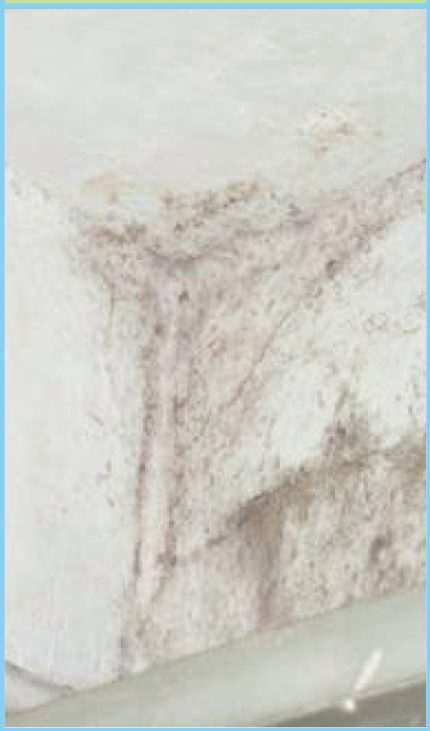
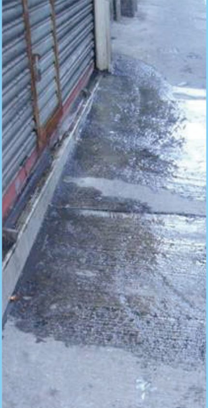
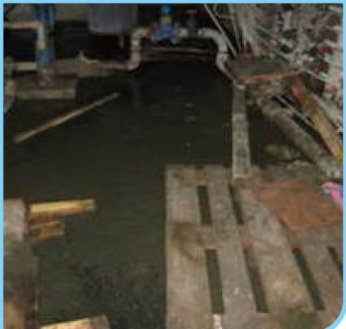

4
衛生級別：你的個案有幾緊急？
衛生局作為中心成員部門，會進行公共衛生風險評估，並根據風險級別向權限部門建議開展處置方案及期限， 亦會通告並敦促業主及／或管理人自行處理。以下三級，可用來判斷自己個案的緊急程度。
| 衛生級別 | 特徵 | 參考圖片 |
|---|---|---|
| 低風險 |
危害性質輕、影響範圍小、發展緩慢
|
 圖：《處理樓宇滲漏常識》P.13 · 低風險示例 |
| 中風險 |
危害性質、影響範圍、發展速度中等
|
 圖：《處理樓宇滲漏常識》P.14 · 中風險示例 |
| 高風險 |
危害性質嚴重、影響範圍大、發展迅速
|
 圖：《處理樓宇滲漏常識》P.14 · 高風險示例 |
後果：根據第 2/2004 號法律《傳染病防治法》及第 81/99/M 號法令《衛生局組織職能架構》，
如業主因不進行維修，從而危害公共衛生，政府則可按相關規定，進行一些強制措施，
以預防或消除可能危及或損害個人或集體健康之因素或情況。